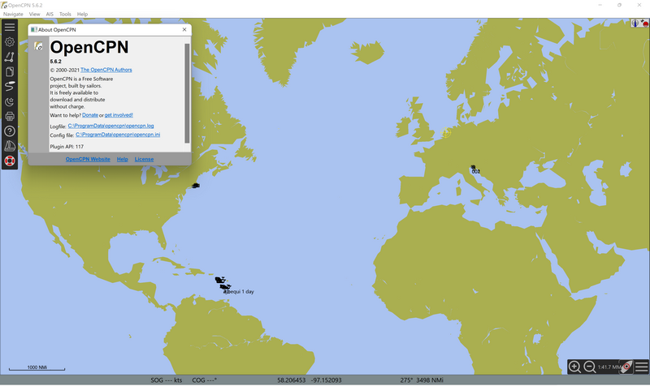

Chart Installation
The goal is to install charts quickly and get started using OpenCPN.
-
Start by going to the Quick Start > Chart Downloader page and follow the instructions for downloading some charts, any charts, so you can start learning OpenCPN.
-
After you have learned OpenCPN by using some free ChartDownloader charts, if Chartdownloader does not have free charts for your country or area, then you will need to use the Ocharts.org plugin which is the second choice under "How to install Charts", below.
Chart Overview has more detail about OpenCPN chart capabilities.
How to install Charts
Five Alternatives in order of availability and ease. We suggest installing a NOAA chart with the Chartdownloader , even if you aren’t in the US. Use San Francisco or the Chesapeake Bay. It is easier to start learning this way than jump into the multitude of other chart options.
Where is my Chart Directory?
-
The normal location of the Charts directory is under $HOME (the user’s home directory, with user permissions).
-
However Charts can be located anywhere on the disk where the user running OpenCPN has access.
-
ChartDownloader, suggests a reasonable default location that does not need to be changed in most cases.
-
If you obtain charts manually, place them under a reasonable root directory like:
* Windows: C:\Charts
* Linux or MacOS: ~/Charts
- We recommended to create sub-directories for various chart types and geo regions.
- Example: "C:\Charts\MBTiles-SOPAC". This ease when setting up //[[opencpn:manual_basic:set_options:charts:chart_groups]]//."
MacOS Chart Location
We have seen occasional unexplainable trouble with charts located in user’s Documents folder. If you are unlucky enough to be affected, place your charts somewhere else, like
/Users/<your username>/Charts
OpenCPN does not work on iPads or iPhones, but you can use your iPad with RealVNC to access OpenCPN running on a computer.
Flatpak Chart Location
Flatpak Access to Directories
Flatpak is a framework for installing applications on various Linux systems. Out of the box, the Flatpak package can access files in the home directory. As long as charts are installed here no actions needs to be taken. However, if charts needs to be stored outside of $HOME (for exampe on an USB stick) flatpak must be given access to the used directories using something like
$ flatpak override --user org.opencpn.OpenCPN --filesystem=/usr/local/charts
More information: https://docs.flatpak.org/en/latest/sandbox-permissions.html
Android Chart Location
Android OS has changed, restricting application file storage and data access to secure locations. Charts need to be placed in these secure locations using elevated privileges, such as when using Android File Manager or Google Playstore X-plore file manager. For example:
-
Android 8: O584 easily accesses “/storage/emulated/0/Download” from the “Import” dialog.
-
Android 12 and above: Google implemented a “scoped storage” policy, so the Download directory is not directly accessible to applications. Android 12+ "sandboxes” application access to only files that it "owns".
OpenCPN needs to be able to access a "Charts" folder, which as of Android 12+ must be placed under either
-
/storage/emulated/0/Android/data/org.opencpn.opencpn/files on the device.
-
or /storage/XXXX-YYYY/Android/data/org.opencpn.opencpn/files on the SD card.
It is easier to access these secure folders after connecting your laptop via usb, and then use the OS File Folder manager to copy over your charts.
To be able to read and write gpx files or "charts", use one of the file managers listed above, that can access system folders to copy GPX files or chart files to the OpenCPN private directory tree “Android/data/org.opencpn.opencpn/files/Download”. For charts, you may wish to locate them in a “Chart” directory.
Once you have charts on your phone and you know where they are, you can open up OpenCPN and in the Settings/Charts/Chart Files menu select “Add Directory” and a file browser will open. Navigate to your charts and hit “OK”. Then you will be back in the Chart Files menu. Click “OK” again and OpenCPN will build the chart database and then your charts will be loaded and ready to use.
GSHHG Basemap
A Basemap (GSHHG Low Res) showing Continents Land edges, is included in OpenCPN installation. The Chart Downloader may be used to download a High Resolution version of this basemap. These are NOT charts.

Important next step
-
connect_to_gnss (GPS receiver)